Near Torekov, Bjäre Peninsula, Båstad Municipality, Skåne · 56.4342° N, 12.6345° E · 3:50 PM–3:54 PM · 4 photos
UnconfirmedThis cluster spans nearly six hours — a beach walk with a distant view of an island/headland, then an indoor dinner shot — evidently the holiday cottage used as a base near Torekov and the small beach out front, not a single named public site.
The base for these two days sits just north of Torekov, on the blunt western tip of the Bjäre Peninsula, a coastline that appears to have been sanded down deliberately for the tourists' convenience. A short walk from the door leads down to a quiet stretch of shore where rugosa roses -- the tough, salt-tolerant shrub rose that colonised nearly every sandy Baltic and Kattegat beach after being introduced from East Asia in the 1800s and clearly never looked back -- grow wild along the dune grass, its rose hips already reddening by late July. Out past the low skerries, a small coastal cargo boat idles near the tree-lined outline of what is likely Hallands Väderö, the nature reserve island a short ferry ride offshore and thoroughly unbothered by the attention.
The day closes back at the cottage with a bottle of Château L'Hospitalet, a Languedoc wine from the La Clape appellation on France's Mediterranean coast -- a small reminder that even a Swedish coastal holiday runs, in the end, on the same easy imported pleasures as anywhere else, table set after a long afternoon and evening spent walking into Torekov and back, having accomplished admirably little.
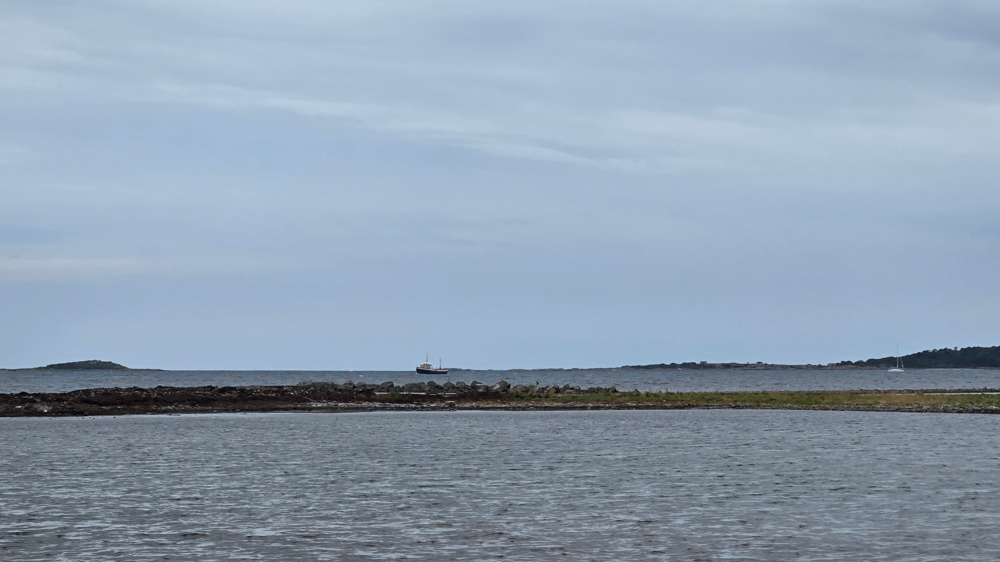
3:50 PM
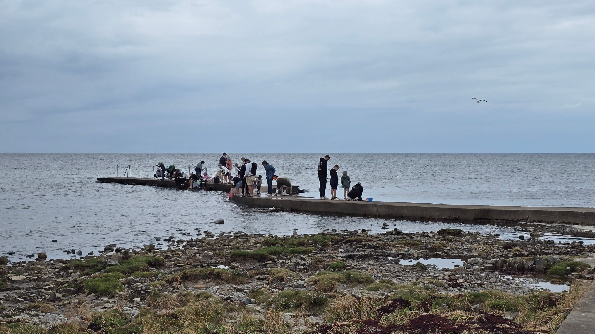
3:50 PM
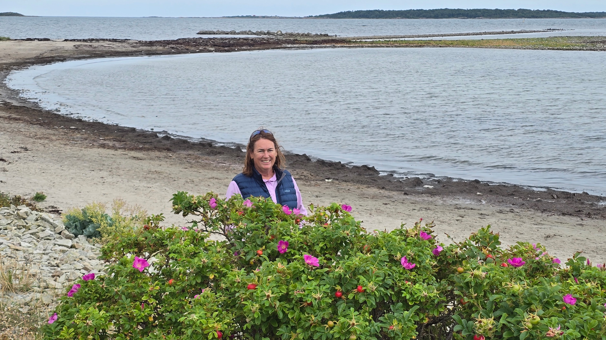
3:54 PM
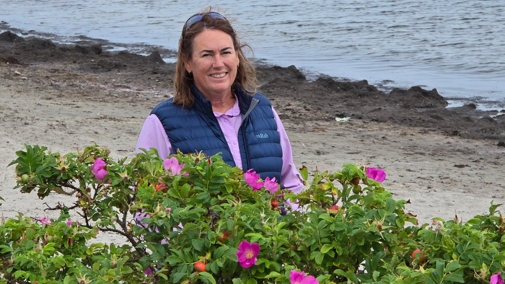
3:54 PM
2
Kattegattleden Trail Marker
Coastal path near Torekov, Bjäre Peninsula, Skåne · 56.4293° N, 12.6326° E · 6:03 PM · 1 photo
The red waymarker photographed here belongs to Kattegattleden, the roughly 390 km signed cycling and walking route that traces Sweden's west coast between Helsingborg and Gothenburg with the quiet confidence of a route that knows exactly where it's going. Opened in 2015 and folded into the European long-distance EuroVelo 7 network (North Cape to Malta, an itinerary of genuinely alarming ambition), the route crosses the low, farmed hills of the Bjäre Peninsula on its way between Ängelholm and the resort town of Båstad -- this stretch, past Torekov, is one of its prettiest and hilliest sections, and makes no apology for either.
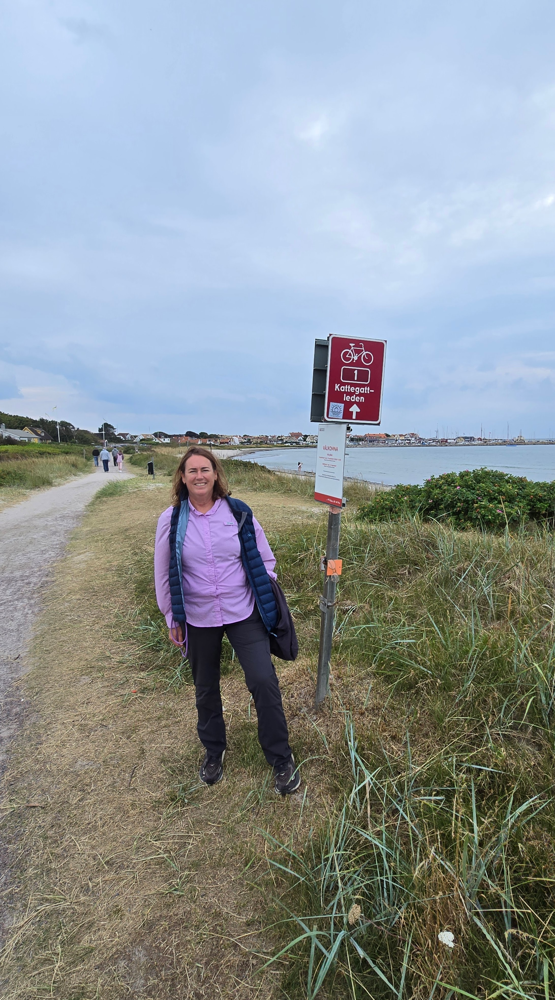
6:03 PM
3
Torekov Harbour Beach
Torekov, Båstad Municipality, Skåne · 56.4267° N, 12.6236° E · 8:01 PM–8:22 PM · 8 photos
Torekov's 600-metre sandy strand curls around the harbour, with timber bathing piers reaching out into the Kattegat -- one of them likely the well-known Morgonbryggan ('morning jetty'), a favourite for early swims with its stepped ladders into clear, sandy-bottomed water that has clearly seen every temperature of Swedish resolve. Once a fishing village whose population, by local lore, briefly outgrew Helsingborg's (a claim the village has never once tired of repeating), Torekov's low, wind-worn cottages, many rebuilt after a fire in 1858, now anchor one of Skåne's most established summer resorts, with barely 863 year-round residents swelling many times over each July, largely without complaint.
A small wooden bathing hut with a weathervane and windsock stands out on the rocks nearby, part of a long regional tradition of shoreline bath-houses (kallbadhus) for sea bathing and sauna. Torekov's own larger warm bathhouse burned down on Christmas Eve 2019, an act of arson-adjacent bad timing if ever there was one; residents have since been raising funds for a new cold-bath facility with sauna and pier, a project still very much underway and, one gathers, very Swedish in its patience.
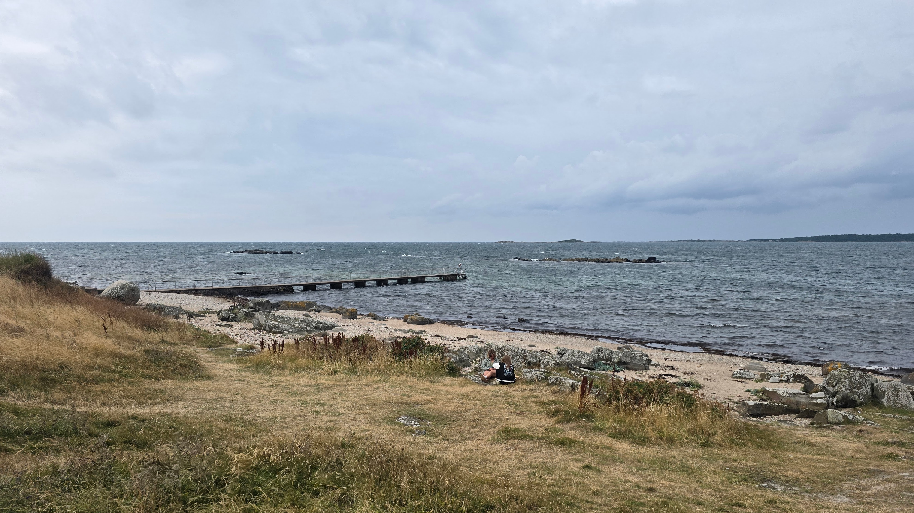
8:01 PM
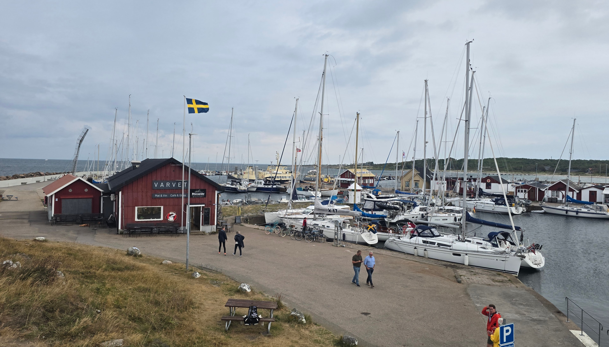
8:03 PM
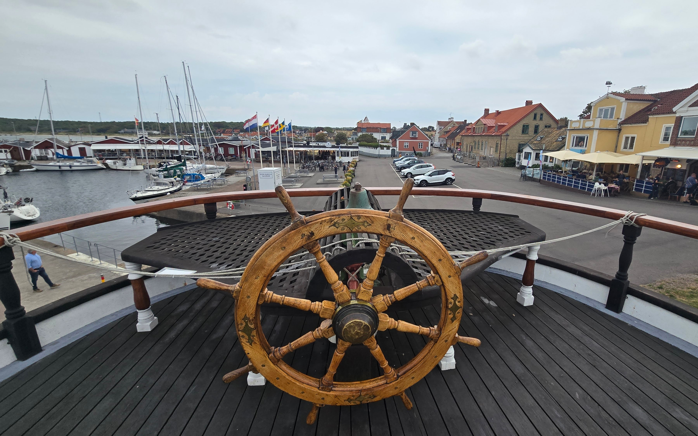
8:03 PM
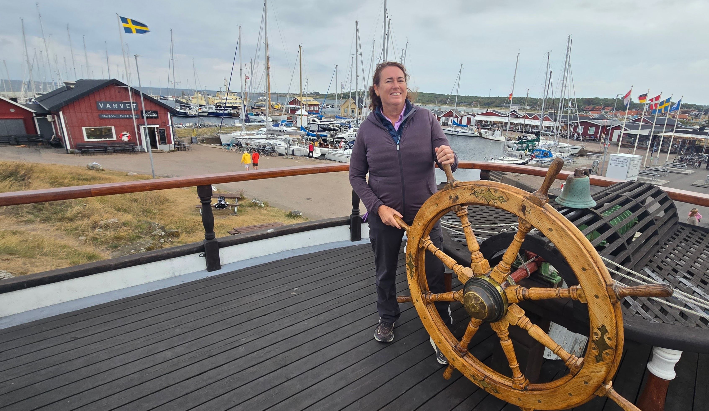
8:03 PM
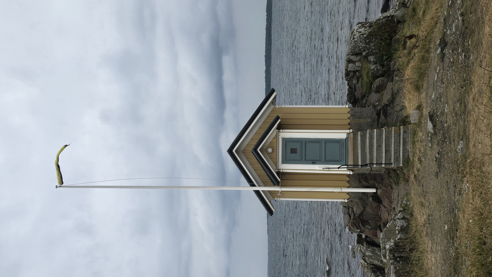
8:04 PM
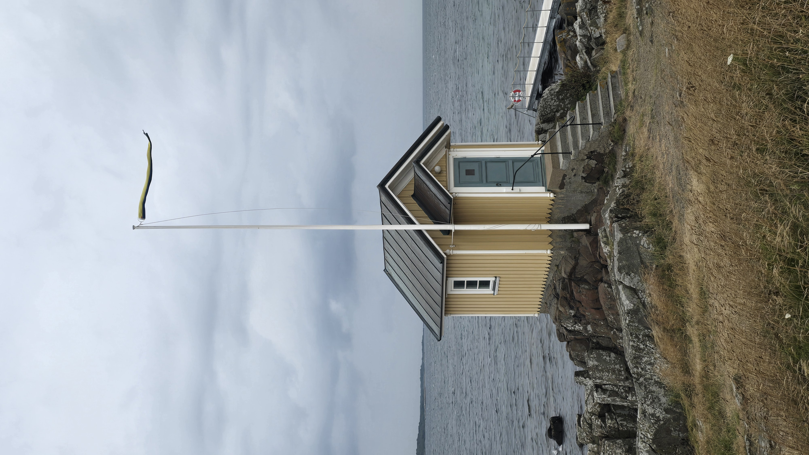
8:05 PM
Statue of Sankta Thora
This crowned bronze figure, inscribed 'S:t Thora,' commemorates the legend that gives Torekov its name and its patron: a Danish princess cast to sea by a cruel stepmother, whose body washed ashore at a large boulder near the harbour, in a plot that would feel entirely at home in a fairground ghost story. A blind man who buried her miraculously regained his sight, and Thora, venerated locally ever since, is remembered today by the Sankta Thoras Gille, a local society devoted to keeping her story alive with what one presumes is real dedication. Linguists, spoilsports to a one, offer a plainer rival etymology -- 'thora' for height and 'kove' for hut or cabin -- but the saint's tale is the one that has stuck, as it thoroughly deserves to.
The statue stands in a small green ringed by a low dry-stone wall, in front of whitewashed village houses -- a modest, well-loved local landmark rather than a grand monument, the kind of thing children clamber past on their way to the beach, largely indifferent to the miracle behind it.
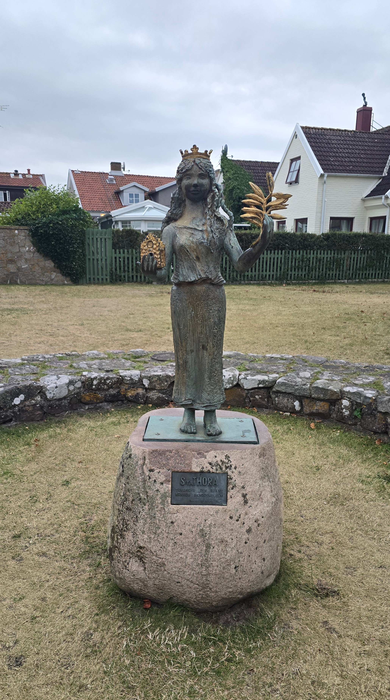
8:15 PM
Torekovs kyrka
A chapel dedicated to Saint Thora is documented in Torekov as early as a 1344 privilege letter, with a stone church raised around 1200 and enlarged through the 13th and 14th centuries in the leisurely, no-particular-hurry style of the era. That building, along with 47 houses in the village, burned down in the great fire of 1858, fire once again cast in its favourite role as urban renewal. The current whitewashed church, designed by architect Johan Adolf Hawerman and built in yellow Helsingborg brick rather than the red originally specified (someone, somewhere, changed their mind), was consecrated in December 1863, and its tower was rebuilt in a fresh form during a 1950s restoration after woodworm damage, the woodworm having apparently succeeded where the fire failed.
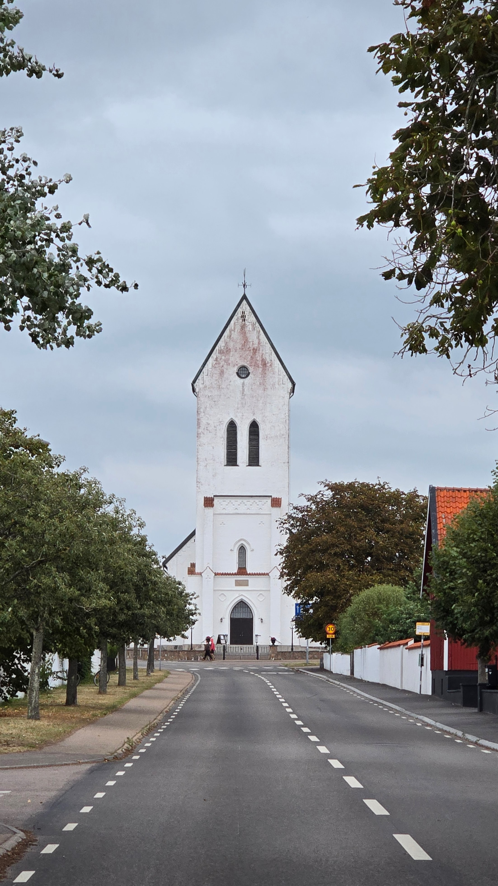
8:22 PM
Off the Map
These 5 frames carried no GPS data in
their EXIF (common for messaging-app re-saves, screenshots, or some camera apps) and weren’t placed on the
map above. Add coordinates manually if you’d like them included.